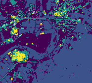

Clustering
In this example we will do some simple cell clustering based on multiband imagery.
Setup
First some setup:
import astraea.spark.rasterframes._
import astraea.spark.rasterframes.ml.TileExploder
import geotrellis.raster.io.geotiff.SinglebandGeoTiff
import geotrellis.raster._
import geotrellis.raster.render._
import org.apache.spark.ml.Pipeline
import org.apache.spark.ml.clustering.{KMeans, KMeansModel}
import org.apache.spark.ml.feature.VectorAssembler
import org.apache.spark.sql._
// Utility for reading imagery from our test data set
def readTiff(name: String): SinglebandGeoTiff = SinglebandGeoTiff(s"../core/src/test/resources/$name")
implicit val spark = SparkSession.builder().
master("local[*]").appName(getClass.getName).getOrCreate().withRasterFrames
spark.sparkContext.setLogLevel("ERROR")
import spark.implicits._
Loading Data
The first step is to load multiple bands of imagery and construct a single RasterFrame from them.
val filenamePattern = "L8-B%d-Elkton-VA.tiff"
val bandNumbers = 1 to 4
val bandColNames = bandNumbers.map(b ⇒ s"band_$b").toArray
// For each identified band, load the associated image file, convert to a RasterFrame, and join
val joinedRF = bandNumbers.
map { b ⇒ (b, filenamePattern.format(b)) }.
map { case (b, f) ⇒ (b, readTiff(f)) }.
map { case (b, t) ⇒ t.projectedRaster.toRF(s"band_$b") }.
reduce(_ spatialJoin _)
We should see a single spatial_key column along with 4 columns of tiles.
scala> joinedRF.printSchema()
root
|-- spatial_key: struct (nullable = true)
| |-- col: integer (nullable = false)
| |-- row: integer (nullable = false)
|-- band_1: rf_tile (nullable = true)
|-- band_2: rf_tile (nullable = true)
|-- band_3: rf_tile (nullable = true)
|-- band_4: rf_tile (nullable = true)
ML Pipeline
SparkML requires that each observation be in its own row, and those observations be packed into a single Vector. The first step is to “explode” the tiles into a single row per cell/pixel.
val exploder = new TileExploder()
To “vectorize” the the band columns, as required by SparkML, we use the SparkML VectorAssembler. We then configure our algorithm, create the transformation pipeline, and train our model. (Note: the selected value of K below is arbitrary.)
val assembler = new VectorAssembler().
setInputCols(bandColNames).
setOutputCol("features")
// Configure our clustering algorithm
val k = 5
val kmeans = new KMeans().setK(k)
// Combine the two stages
val pipeline = new Pipeline().setStages(Array(exploder, assembler, kmeans))
// Compute clusters
val model = pipeline.fit(joinedRF)
Model Evaluation
At this point the model can be saved off for later use, or used immediately on the same data we used to compute the model. First we run the data through the model to assign cluster IDs to each cell.
scala> val clustered = model.transform(joinedRF)
clustered: org.apache.spark.sql.DataFrame = [spatial_key: struct<col: int, row: int>, column_index: int ... 7 more fields]
scala> clustered.show(8)
+-----------+------------+---------+-------+------+------+------+--------------------+----------+
|spatial_key|column_index|row_index| band_1|band_2|band_3|band_4| features|prediction|
+-----------+------------+---------+-------+------+------+------+--------------------+----------+
| [0,0]| 0| 0| 9470.0|8491.0|7805.0|6697.0|[9470.0,8491.0,78...| 1|
| [0,0]| 1| 0| 9566.0|8607.0|8046.0|6898.0|[9566.0,8607.0,80...| 1|
| [0,0]| 2| 0| 9703.0|8808.0|8377.0|7222.0|[9703.0,8808.0,83...| 0|
| [0,0]| 3| 0| 9856.0|8983.0|8565.0|7557.0|[9856.0,8983.0,85...| 0|
| [0,0]| 4| 0|10105.0|9270.0|8851.0|7912.0|[10105.0,9270.0,8...| 0|
| [0,0]| 5| 0|10273.0|9463.0|9196.0|8341.0|[10273.0,9463.0,9...| 2|
| [0,0]| 6| 0| 9920.0|9077.0|8480.0|7534.0|[9920.0,9077.0,84...| 0|
| [0,0]| 7| 0| 9559.0|8603.0|7847.0|6829.0|[9559.0,8603.0,78...| 1|
+-----------+------------+---------+-------+------+------+------+--------------------+----------+
only showing top 8 rows
If we want to inspect the model statistics, the SparkML API requires us to go through this unfortunate contortion:
val clusterResults = model.stages.collect{ case km: KMeansModel ⇒ km}.head
Compute sum of squared distances of points to their nearest center:
scala> val metric = clusterResults.computeCost(clustered)
metric: Double = 1.0416215116259007E10
scala> println("Within set sum of squared errors: " + metric)
Within set sum of squared errors: 1.0416215116259007E10
Visualizing Results
The predictions are in a DataFrame with each row representing a separate pixel. To assemble a raster to visualize the cluster assignments, we have to go through a multi-stage process to get the data back in tile form, and from there to combined raster form.
First, we get the DataFrame back into RasterFrame form:
val tlm = joinedRF.tileLayerMetadata.left.get
val retiled = clustered.groupBy($"spatial_key").agg(
assembleTile(
$"column_index", $"row_index", $"prediction",
tlm.tileCols, tlm.tileRows, ByteConstantNoDataCellType
)
)
val rf = retiled.asRF($"spatial_key", tlm)
To render our visualization, we convert to a raster first, and then use an IndexedColorMap to assign each discrete cluster a different color, and finally rendering to a PNG file.
val raster = rf.toRaster($"prediction", 186, 169)
val clusterColors = IndexedColorMap.fromColorMap(
ColorRamps.Viridis.toColorMap((0 until k).toArray)
)
raster.tile.renderPng(clusterColors).write("target/scala-2.11/tut/ml/clustered.png")
| Color Composite | Cluster Assignments |
|---|---|
 |
 |